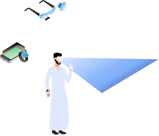

من مبررات استخدام تقنية الواقع المعزز على المتعلمين بالمقارنة مع خبرات التعلم بدون استخدام تقنية الواقع المعزز ما يلي
زيادة في فهم المحتوى العلمي في مواضيع معينة
الاحتفاظ بالمعلومات في الذاكرة لفترة أطول
مساعدة الطلاب على التحكم بطريقة التعلم من خلال التعليم وفقًا لمدى استيعابهم وطريقتهم المفضلة
أنه يبنى حول الأماكن التي ليس لها وجود من الأساس
يُضفي صبغة خيالية على منظر خيالي